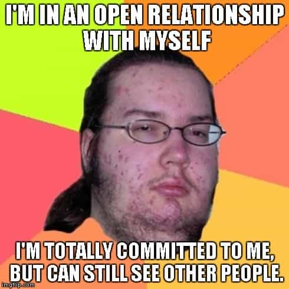

The best examples of good vs. bad decisions are often to be found among real experiences. Here are five authentic examples that showcase detrimental beta behavior that no man should ever engage in.
1. Bailing On Your Friends To Chat With A Toxic Female
A good friend of mine, a highly respectable, masculine man who leads a balanced life by most peoples’ standards, fell into a vicious cycle of questionable behavior when a histrionic yet attractive girl put her diabolic claws in his chest a number of years ago.
At that time, my friend dwelled in limbo, as he succumbed to the extent that he felt committed to the neurotic vixen, but still free to enough to travel to the U.S. with yours truly and another friend.
As we were about to have big night out in Miami, and the ambience was that of omnipresent positive vibes that were emerging from our drunken souls, he suddenly left the group after we had just picked up more cash at our crib and heading to Nikki Beach Club. He reluctantly admitted that he was about to stay home and chat with his borderline girlfriend instead of joining us.
That weak move made one wonder whether he belonged to the sub-species Betamaleicus menstruatis or Alphamaleicus testosteronis.
2. Allowing Your Girlfriend To Have Multiple Fuckbuddies Be In An Open Relationship

During a trip to Asia, I met a nice Mexican guy with an American passport. He was moderately successful and had a decent level of confidence, but because he was short and chubby, I would not expect him to land better than a 5 or 6 in the U.S.
Fast forward five years and he and his 5.5 hapa harlot show up and actually visit me in Sweden. That was all very nice until they proclaimed that they were in an “open relationship.” Furthermore, he explained that she needed some space and that he was fine with it. Still, they were not completely letting go of each other, since they shared an apartment and were even “soulmates.”
What that really meant, of course, was that she slept around with more good-looking guys while he got maybe a few 2s and 3s at best.
3. Let Your Ugly Girlfriend Drag You Around Because You Don’t Have The Balls To Let Go Of Her
My third example consists of a tall and good-looking engineer with great potential, who is glued to his ugly girlfriend as we speak. Perhaps he’s a bit nerdy and lacks optimal confidence, but it’s obvious that he’s much better-looking than his girlfriend, who has an almost deformed, flaccid fat ass, weird protruding eyes, and a massive undershot jaw. No make-up and other inauthentic measures can cure these aesthetic illnesses. She needs to lose a lot of weight and see a fucking dentist ASAP!
Anyway, he was actually unfaithful to her and slept with one better-looking girl whom he met online. As soon as this was revealed, the fatty forgave him but decided to react accordingly. Whenever she decides that she/they should leave the apartment prison, he must come, even attend various “ladies’ nights,” during which he is the sole man—stripped of his masculinity—and must endure their meaningless blather for hours.
Relationships are complicated, but if a man significantly dates down and is obviously not content with the situation, he must take proper action and let go of the obese obstacle that is hindering him from reaching his true potential.
4. Lose Frame Step-By-Step And Then Make Everything Even Worse By Calling And Sending Pathetic Emails
He whom is not without beta sin is allowed to throw stones. I have to admit that one of the most feeble-minded moves that I have come across are reflected upon me.
I was partially red pilled for ten years ago and made a splendid series of decisions when I met my first true love: got her, kept her, and eventually dumped her at the right moment.
The problem occurred later on, when I lost frame and cried, called, and continued a path of further time-consuming, counterproductive behavior long after the actual break-up. I even started to send pathetic emails to her, as she would ignore my phone calls, the content of which screamed self-assertive juvenile weakness.
In the end, I mainly lost some time and energy by doing this, but it was a prime example of weak behavior and something to never repeat again.
5. Drive 300 Miles To Meet Your Chubby Girlfriend—Who Is Obviously Cheating On You—And Then Repeat The Fatal Mistake One More Time
Fortunately, there is at least one person who outmatches me in this regard. This guy was in a LTR with a chubby chick, and they had a long-distance thing going on while attending university at two separate locations.
When he drove 300 miles to meet her in Gothenburg, Sweden, he found out that his beloved one was in her room with another guy standing in the entrance. Rather than to at least try to explain, she suggested that they should not see each other at this time, hence he left and drove away, as any sane man would do. That situation must have been beyond awkward, leading to major visceral scares.
Be that as it may, while he was driving and was halfway from Gothenburg, the bitch called him and said that she has changed her mind. Thus the lesser beta quickly turned around and drove all the way back to his super-sized siren, who was calling for him to worship at her dominance shrine.
While these beta actions aren’t all equally bad, they must be avoided like the plague by any sane man.
If you want to read more of William Adams’ material, check out his website Syncretic Politics.
Read More: I Went To Paris To Meet A Girl And She Gave Me The Cold Shoulder